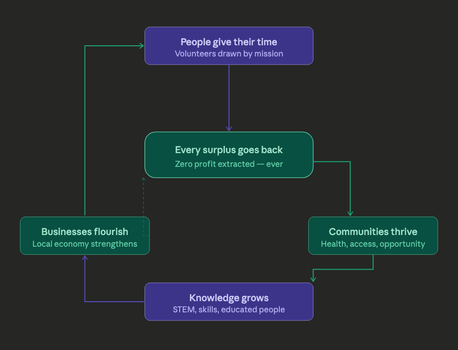

Phase 1 (current)
Establish connection with local NGO and support them with connecting specialists, supplying hardware, and organizing educational training — long-term support.
A single loop: time, surplus, communities, knowledge, and local business
The chart below is the model in one picture.

Establish connection with local NGO and support them with connecting specialists, supplying hardware, and organizing educational training — long-term support.
Build a permanent base in the country. Create 0-Margin projects to promote local businesses and economic prosperity.
Expand the project to new countries. Strengthen the network among supported countries—improving business, support, and the sharing of expertise.